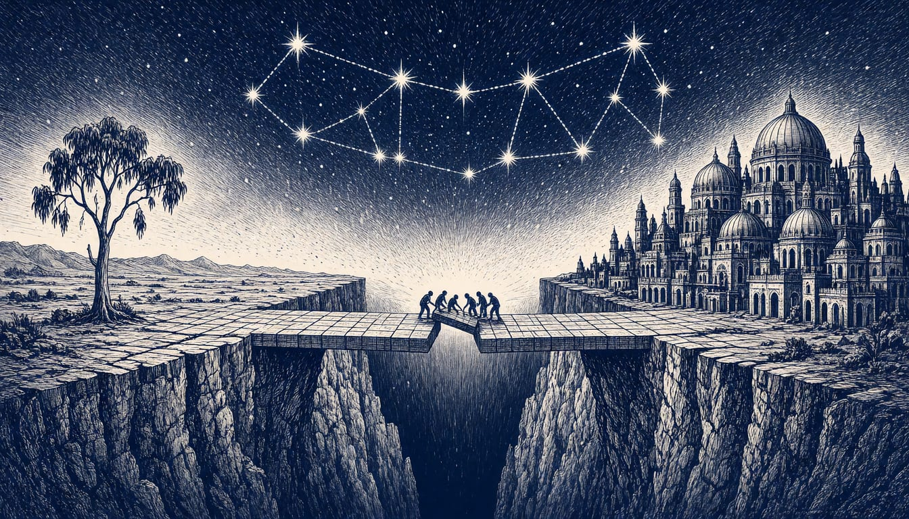

Australia signs association agreement to join Horizon Europe as 24th associated country
Australian entities get direct access to Pillar II funding on equal terms with EU member states, including the right to lead consortia. A new deal must be negotiated before the next framework starts in 2028.

Australia has signed its way into Horizon Europe. Industry Minister Tim Ayres signed the association agreement in Brussels on 12 November 2026, and Australia becomes the 24th country associated with the programme.
Staying in after the current programme ends will require a new deal, negotiated before the next seven-year framework starts in 2028. That programme carries a potential budget of at least €175 billion.
From January 2027, Australian entities get direct access to Pillar II funding on equal terms with EU Member States, including the right to lead consortia. Pillar II is worth €52.4 billion and funds collaborative research in areas including health and climate. The Group of Eight committed to match the government's contribution to the joining fee, up to 50 per cent capped at A$20 million, for 2027.
The European Commission and Australia concluded negotiations on Australia's association on 9 June 2026. Government and universities together put about A$40 million into the joining fee. The agreement now goes to Australia's Joint Standing Committee on Treaties, and the European Commission expects formal completion by mid-2027.
European Commission President Ursula von der Leyen called the association more than a scientific agreement, proof of the trust underpinning the EU-Australia partnership. In climate, energy, health and emerging technologies, Ayres said, the agreement will connect Australian researchers and innovators with leading international expertise.